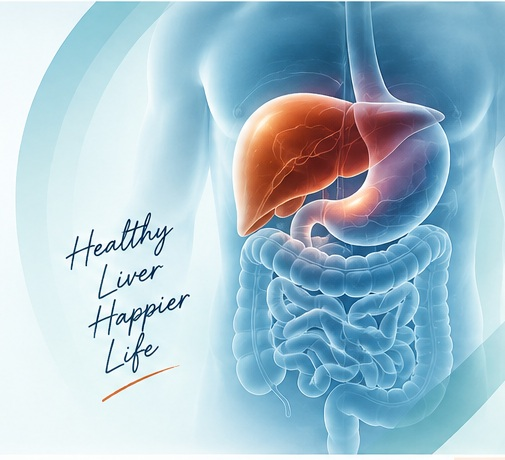

Fatty Liver Disease
Evaluation of fatty liver, metabolic risk factors and fibrosis risk when clinically indicated.
Know more →Specialist evaluation and evidence-based treatment for digestive diseases, liver disorders, pancreatic conditions, inflammatory bowel disease and endoscopic procedures, with a particular focus on liver health.

Consultant Gastroenterologist
Hepatologist & Advanced Endoscopist
The liver is central to overall health. AGLEC provides structured assessment and long-term care for fatty liver, viral hepatitis, jaundice, cirrhosis and abnormal liver tests, with a specialist gastroenterology perspective.
Evaluation of fatty liver, metabolic risk factors and fibrosis risk when clinically indicated.
Know more →Testing, diagnosis, treatment planning and long-term monitoring of viral hepatitis.
Know more →Assessment of chronic liver disease, cirrhosis and complications requiring structured follow-up.
Consult →Specialist evaluation of persistent abnormal liver tests and suspected autoimmune liver disease.
Consult →Dr. Krishna Kohli's training includes comprehensive gastroenterology with experience in diagnostic and therapeutic endoscopy, colonoscopy and ERCP. Procedures are advised when clinically indicated, with emphasis on preparation, safety and appropriate follow-up.
AGLEC combines specialist consultation with focused liver care and endoscopy services, while maintaining a broad gastroenterology practice.
Acidity, GERD, IBS, abdominal pain, dyspepsia and other digestive symptoms.
Fatty liver, hepatitis, jaundice, cirrhosis and abnormal liver function tests.
Upper GI endoscopy, therapeutic endoscopy, colonoscopy and ERCP.
Assessment of acute and chronic pancreatitis and pancreatic disorders.
Ulcerative colitis, Crohn’s disease, chronic diarrhoea, constipation and bleeding.
Long-term monitoring, report review, medicine review and patient counselling.
DM Medical Gastroenterology Gold Medalist with postgraduate training in Internal Medicine and a clinical focus spanning gastroenterology, hepatology and advanced endoscopy.
AGLEC is a centre-first practice built around gastroenterology, liver disease and endoscopic care. Its clinical model prioritises appropriate investigation, clear explanation and continuity of care rather than unnecessary testing.
Useful articles written around common patient questions and local search intent, without keyword stuffing or unsupported claims.
Why fatty liver on ultrasound is only the start of risk assessment.
Read article →When recurrent symptoms deserve more than repeated self-medication.
Read article →What upper GI endoscopy examines and how preparation works.
Read article →Why prevention and appropriate testing matter even without symptoms.
Read article →Objective criteria that matter more than promotional “best doctor” claims.
Read article →Common reasons why visible blood deserves proper assessment.
Read article →Yes. Liver care is a major focus area, including fatty liver, viral hepatitis, jaundice, chronic liver disease, cirrhosis and abnormal liver function tests.
His CV documents experience in diagnostic and therapeutic endoscopy, colonoscopy and ERCP, along with advanced endoscopy and minimally invasive techniques.
Rather than relying on a “best” claim, assess recognised specialist qualifications, registration, relevant experience, communication and availability of appropriate investigations or endoscopy.
Persistent abnormal liver tests, fatty liver with metabolic risk factors, hepatitis, jaundice or concern for chronic liver disease may justify specialist evaluation.
Advanced Gastro, Liver & Endoscopy Centre
Radha Rani Complex, Near Bhagat Halwai,
Opp. Axis Bank, Kargil Petrol Pump, Agra
Appointments: +91 9762772430
Alternate: +91 9927005959
Consultation: Monday–Saturday · 1:00–6:30 PM